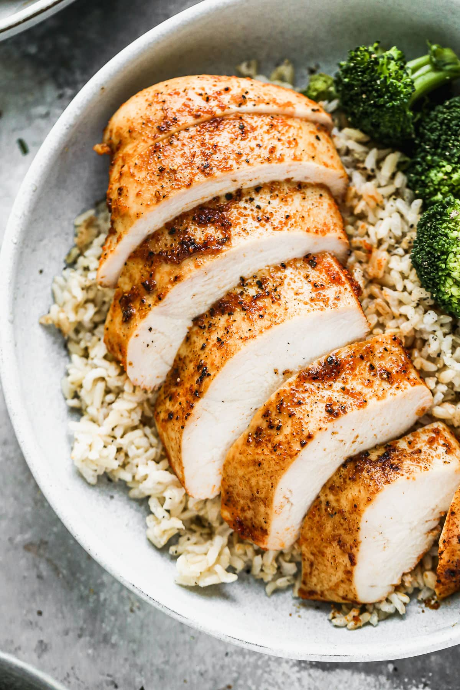

Chicken breast recipe

Baked Chicken Breast
The piece de resistance for your every day, never-lets-you-down,
basic-done-better recipe needs: how to make the absolute BEST Baked Chicken Breast!
Ingredients
- chicken breasts
- onion and garlic
- spices and seasonings
Steps
- Pound the chicken.
- Pat the chicken dry.
- Salt the chicken and refrigerate it.
- Toss the chicken with oil and spices, then lay it in a casserole dish.
For easy clean up, you can line the dish with foil or parchment paper.
- Bake at 425 degrees F.
- Let the chicken rest for at least 5 minutes. DIG IN!